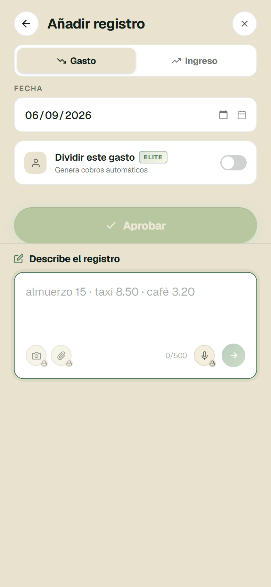
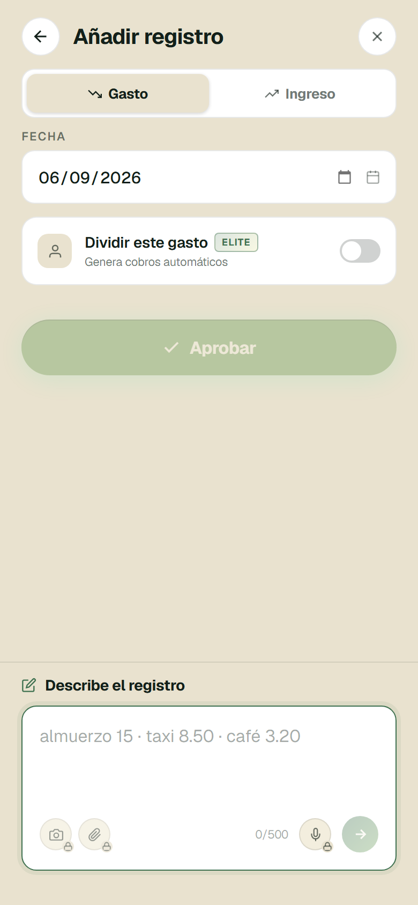
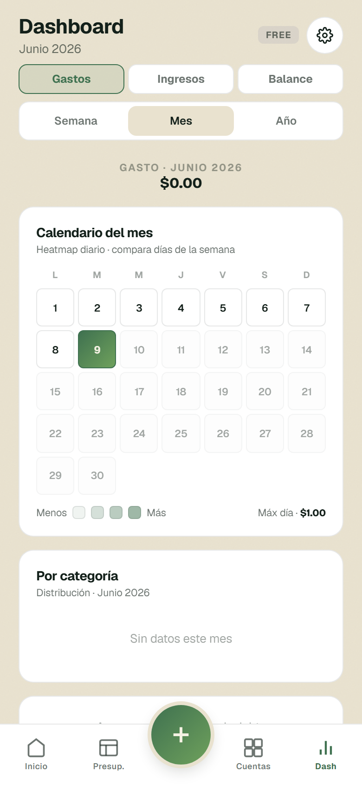
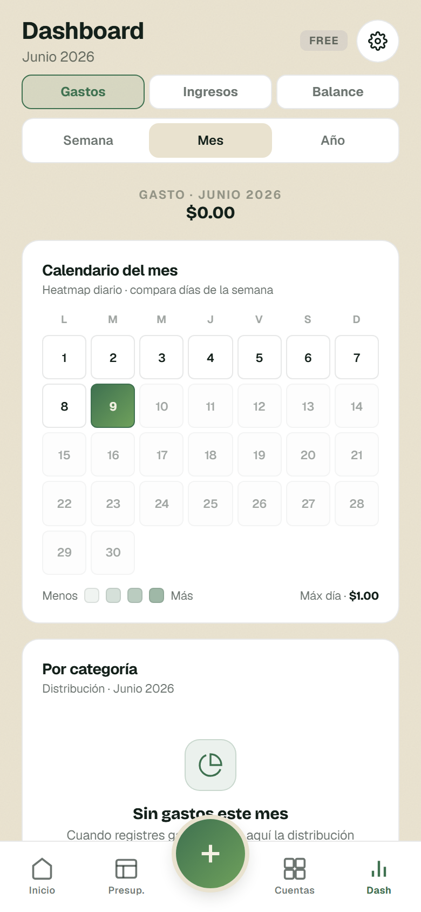
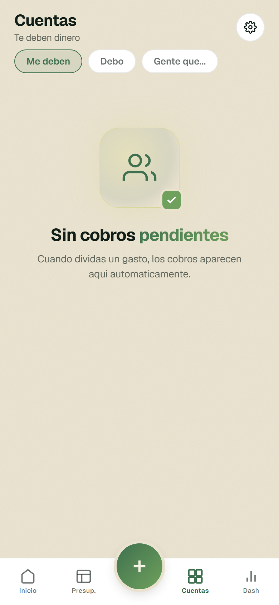
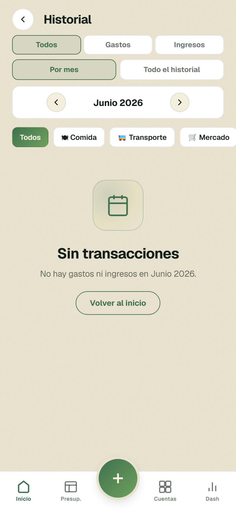
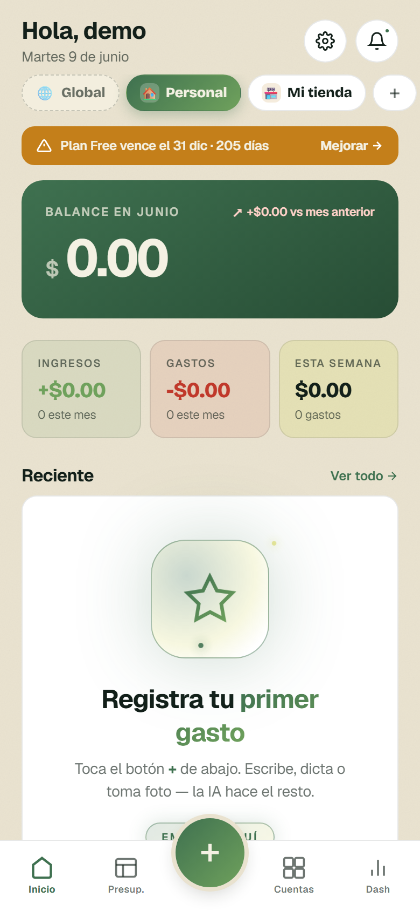
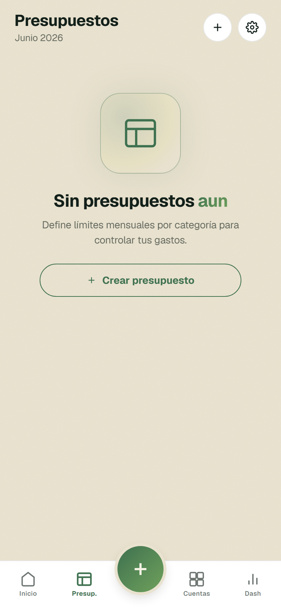
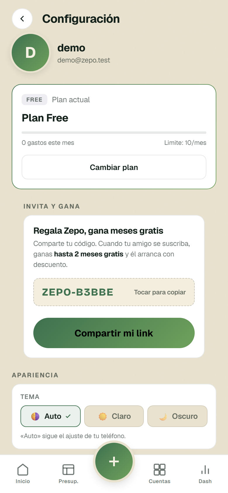
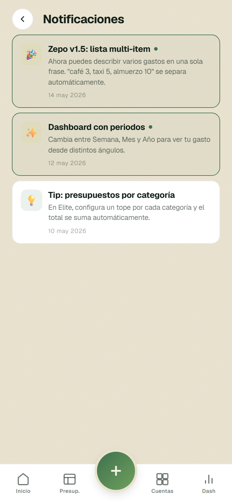

Análisis pantalla por pantalla sobre la app real (login demo). Las propuestas marcadas LISTO PARA VER ya están renderizadas before/after tal cual se verían. Tú eliges cuáles implementamos.


El campo "Describe el registro" es un composer estilo chat que debe quedar pegado abajo (junto al teclado, en la zona del pulgar). Por un detalle de CSS (position:sticky no empuja cuando hay poco contenido) quedaba a media pantalla con un hueco muerto debajo, leyéndose como pantalla rota. El fix (1 línea) lo ancla al fondo: ahora se lee como un chat (área arriba, campo abajo) y el dedo lo alcanza. Riesgo: mínimo.


Consistencia. Presupuestos y Cuentas ya tienen empty states con icono y mensaje claro; el del Dashboard rompe ese estándar y se ve descuidado/“sin terminar”. Unificarlo eleva la percepción de calidad y le dice al usuario qué hacer. Riesgo: nulo.





